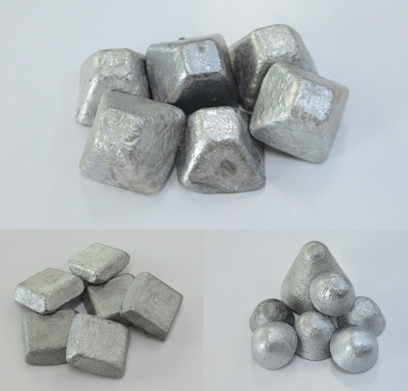

HOME > 제품기술 > 철강부원료
철강부원료
AI 탈산제

- 광물확보, 제련 소재에 이르는 일관 생산체제
- 포스코엠텍은 철강 부원료인 알루미늄 탈산제(잉곳, 펠렛, 미니펠렛)를 직접 생산하여 수요가에 공급하고 있습니다.
- 탈산제사업은 포스코엠텍의 주요사업으로서 경쟁력있는 원료확보 (AI Scrap) 및 생산기술을 바탕으로 하고 있습니다.
제품군
알루미늄 잉곳 (Aluminum Ingot)

| 용 도 | 제강공정에서 과포화된 산소를 제거, 제강 제품의 용접성, 인성, 고온과 부식에 대한 저항력 강화를 위하여 사용합니다. |
|---|---|
| 성 분 | AL 93% min Cu 2.0% max Fe 2.5% max Mn 1.2% max Ti 0.2%max Zn 3.0% max Mg 3.0% max Si 2.5% max |
| 규 격 | 무게 : 1.0kg ± 0.3kg 높이 : 33 mm ± 12.0 mm 길이 : 395 mm ± 25.0 mm 폭 : (上) 25 mm ± 10.0 mm (下) 43 mm ± 7.0 mm |
알루미늄 펠렛 (Aluminum Pellet)

| 용 도 | 제강공정에서 과포화된 산소를 제거, 제강 제품의 용접성, 인성, 고온과 부식에 대한 저항력 강화를 위하여 사용합니다. |
|---|---|
| 성 분 | AL 93% min Cu 2.0% max Fe 2.5% max Mn 1.2% max Ti 0.2%max Zn 3.0% max Mg 3.0% max Si 2.5% max |
| 규 격 | 무게 : 1.0kg ± 0.3kg 높이 : 33 mm ± 12.0 mm 길이 : 395 mm ± 25.0 mm 폭 : (上) 25 mm ± 10.0 mm (下) 43 mm ± 7.0 mm |
Fe-Mn
제품군
페로 망간 (Ferro Manganese)
| 용 도 | 제강공정에서 탈산 및 탈황 등 불순물들을 제거할 때 사용 됩니다. |
|---|---|
| 성 분 | Mn 73% min / C 7.3% min / Si 1.2% max / P 0.2% max / S 0.02% max |
| 규 격 | 10 mm ~ 50 mm |